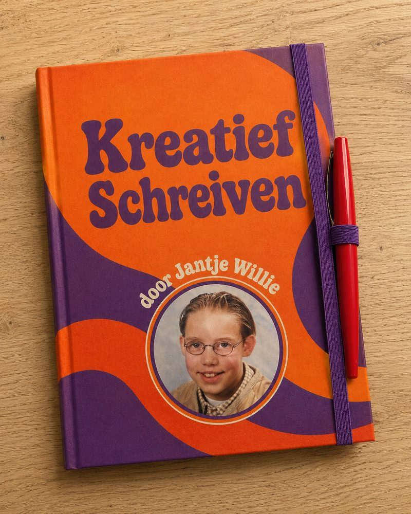

Een boek vol spelvouten
Een paar spelvoutjes, what's the big deal?

Mijn alter ego Jantje Willie bemoeit zich graag online met discussies over technologie en de maatschappij. Keihard doortypen zonder interpuncties en zonder spelling en grammatica te laten verbeteren met AI.
Als mensen Jantje dan beginnen te verbeteren verwijst hij altijd even naar zijn naam. Jantje Willie, Kreatief Schreiver des Vaderlands, bevrijder van de spellingspuristen, je weet toch wel wat ik bedoel…. Ik weet het, beetje toxic. Maar dit ben ik niet hoor, dit is mijn alter ego die soms ook even wat ruimte nodig heeft. Een van de vele stemmen in mijn hoofd die ik niet meer kan onderdrukken.
En die Jantje Willie fluisterde laatst een idee in mijn brein. Zullen we ongeremd een boek gaan schrijven vol spelfouten en grammaticale happy accidents? En toen fluisterde ineens Jan The Man van marketing. Bij elk exemplaar stoppen we dan een rood pennetje. Een puzzelboekje voor spellingspuristen die het leuk vinden om op vakantie spellingpuzzeltjes te maken. Dan boren we twee markten aan! Thanks boys dit is echt een top idee, zei ik vervolgens tegen de stemmen in mijn brein. We gaan een boek schrijven over Kreatief Schreiven.
Met mijn boek wil ik mensen verbinden, ook al werken al onze breinen anders. Verbinding begint bij de ander willen begrijpen, niet bij de vorm waarin die ander iets zegt. Dus maak ik met een knipoog die talige omgangsregeltjes belachelijk en geef ik dysflexibele mensen als ik een stem. En dat allemaal terwijl de spellingspuristen lekker strepen aan het zwembad in Griekenland.
Vinden jullie dat ik hier een GoFundMe voor moet opzetten? Of eerst nog even leren spellen?
Waarschijnlijk bouw ik daarom met Studio Wotto ook speelgoed voor volwassenen waarbij je niet eerst een hele instructie moet lezen maar gewoon kan beginnen en doordat je bezig bent ontdek je wel hoe het werkt. (sorry moest van Jan The Man nog even mijn werk benoemen)